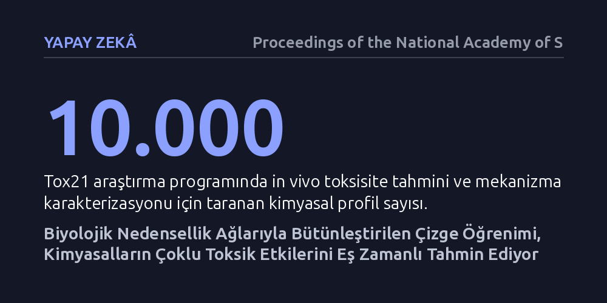

YAPAY-ZEKA · Proceedings of the National Academy of Sciences · 2026-10-21
Araştırmacılar, kimyasalların yol açtığı zararlı etkileri tek tek öngörmek yerine aralarındaki nedensellik bağlarını hesaba katan bir çizge öğrenimi modeli geliştirdi. Bu yöntem, biyolojik hedefler ve yolaklar arasındaki zincirleme etkileşimleri modelleyerek çoklu toksisite sonuçlarının eş zamanlı tahmin edilmesini sağladı.
Kimyasal güvenlilik testlerinde her organ veya etki için bağımsız deneyler yapmak yerine, zehirlenmenin birbiriyle bağlantılı zincirleme bir süreç olarak tek bir yapay zekâ modeliyle çözülebileceğini gösteriyor.

Günlük hayatta temas ettiğimiz endüstriyel kimyasalların, tarım ilaçlarının veya yeni geliştirilen ilaç adaylarının güvenli olup olmadığını belirlemek geleneksel yöntemlerle uzun yıllar alıyor ve yüksek maliyet yaratıyor. Bu süreci hızlandırmak isteyen klasik hesaplamalı toksikoloji modelleri, bir kimyasalın örneğin karaciğer hasarına yol açıp açmayacağını ya da tek bir hormonu bozup bozmayacağını birbirinden bağımsız sorular olarak tahmin etmeye çalışıyor. Ancak insan biyolojisi bu kadar yalıtılmış ve birbirinden habersiz kompartımanlar halinde işlemiyor.
Gerçekte bir kimyasal vücuda girdiğinde yalnızca tek bir reseptörle etkileşime girip durmaz; moleküler düzeyde başlayan bir bağlanma, hücre içi sinyal iletim yollarını tetikler, organ düzeyinde işlev kayıplarına yol açar ve nihayetinde vücudun genelinde zehirlenme belirtisi olarak belirir. Çalışmanın yazarlarının da vurguladığı gibi, "kimyasal toksisite birden fazla hedef, yolak ve olumsuz sonuç arasındaki eşgüdümlü bozulmalardan ortaya çıkar." Dolayısıyla her zararlı sonucu birbirinden bağımsız birer vaka gibi ele alan mevcut yapay zekâ yaklaşımları, biyolojinin bu nedensel ağ yapısını kaçırmaktadır.
Araştırmacılar bu temel darboğazı aşmak amacıyla, nedensellik ilkelerini derin öğrenme mimarileriyle birleştiren yeni bir hesaplamalı çerçeve geliştirdi. Çizge öğrenimi, karmaşık ağ yapılarını ve nesneler arasındaki çok boyutlu ilişkileri haritalandırmada günümüz yapay zekâsının en etkili araçlarından biridir. Bu çalışmada moleküllerin atomik yapıları ile insan vücudundaki hücresel hedefler, reseptörler ve olumsuz sonuç yolakları yönlü bir çizgenin düğümleri ve kenarları olarak tanımlandı.
Geliştirilen mimaride sadece yüzeysel korelasyonlara ve istatistiksel benzerliklere dayanılmadı; bir moleküler olayın ardından biyolojik basamakların hangi nedensel sırayla tetiklendiği modele matematiksel olarak öğretildi. Model, Tox21 ve ToxCast gibi geniş tarama veri tabanlarındaki binlerce kimyasal bileşiğin hücresel test sonuçları ve in vivo aktivite profilleri üzerinden eğitilip sınandı. Böylece algoritmanın biyolojik nedensellik akışını takip ederek tahmin üretmesi sağlandı.
Elde edilen bulgular, nedensellik bilgisini içeren çizge modelinin kimyasalların çoklu toksisite uç noktalarını aynı anda tahmin etmede geleneksel tekil modellere kıyasla daha başarılı olduğunu ortaya koydu. Hormonal bozulmalar, hücresel stres yanıtları ve organ düzeyindeki hasarlar eş zamanlı olarak değerlendirildiğinde modelin hata payı belirgin şekilde azaldı. Çünkü bir hücresel hedefin uyarılmasının diğer yolaklardaki tepkileri nasıl tetiklediği modelin karar mekanizmasına doğrudan dahil edilmişti.
Bunun yanında nedensel çizge yaklaşımı, deney verilerinde eksik ölçümlerin bulunduğu tablolarda bile tutarlı tahminler üretebildi. Toksikoloji araştırmalarında her kimyasalın mevcut tüm laboratuvar testlerinden geçirilmesi imkânsız olduğundan, bu tür eksik veriler klasik makine öğrenimi modellerini işlevsiz kılabiliyordu. Nedensel bağlar sayesinde model, eksik basamakları biyolojik mantık süzgecinden geçirerek tahmin edebildi.
Bu sonuçlar, yeni ilaç geliştirme süreçlerinde ve çevre sağlığı denetimlerinde kimyasal taramaların nasıl yürütüleceğine dair önemli bir perspektif sunuyor. Bir ilaç adayının olası yan etkilerini klinik öncesi aşamada çok boyutlu olarak öngörebilmek, insan denemelerinde karşılaşılabilecek maliyetli başarısızlıkların önüne geçebilir. Aynı şekilde sanayide kullanılan ticari kimyasalların güvenlilik değerlendirmesi, çok daha az hayvan deneyiyle ve daha kısa sürede yapılabilir.
Yine de bu modelin biyolojik gerçekliğin eksiksiz bir kopyası olmadığını unutmamak gerekir. Hesaplamalı bir model ne kadar gelişmiş nedensel kurallarla donatılırsa donatılsın, nihai güvenlik kanıtı için laboratuvar doğrulamaları vazgeçilmezdir. Biyolojik sistemlerin henüz bilinmeyen karmaşık mekanizmaları göz önüne alındığında, modelin başarısı beslendiği mevcut biyolojik bilgi dağarcığıyla sınırlıdır.